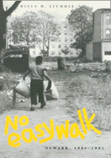

A vivid portrayal of an American urban neighborhood
A vivid portrayal of an American urban neighborhood


 A vivid portrayal of an American urban neighborhood
A vivid portrayal of an American urban neighborhood

|  |
No Easy WalkNewark, 1980-1993Helen M. Stummerpaper EAN: 978-1-56639-243-3 (ISBN: 1-56639-243-8) |
Philadelphia Book Clinic Certificate of Award, 1995
"No Easy Walk is enormously moving....The author nicely avoids the customary condescension of too many visitors in poor communities and infuses Newark's Central Ward with all the mixture of sorrow and courage that its residents display and obviously deserve....I hope the book is widely read."
—Jonathan Kozol
A short drive from Newark's white suburbia is the desolation of the Central Ward. Drawn there initially to photograph the complexity she saw in the faces on the neighborhood children, Helen M. Stummer continued her work in the Central Ward for over a decade, focusing on one of the neighborhood's residents, Carol, and her family and neighbors. Following Carol's day-to-day life, Stummer documents with vivid photographs and compelling narrative the abysmal deterioration of this innercity neighborhood, its run-down buildings slated for demolition, the empty lots where children play amidst old tires, garbage, and broken glass. But No Easy Walkalso celebrates Carol's hopes and struggles for a better life and her spirit of generosity and compassion.
Carol, a single mother with little income and resources, is a critical link in her neighborhood's social network of survival, giving food to those who have none, passing along massages to neighbors without phone service, giving children clothes so that they can attend school. Though we see her getting worn down, we also see her return to school to earn her high school diploma (with honors), get engaged to be married, help her children with their homework, and care for her parents.
Stummer was not only an observer but a pupil of the Central Ward, forced to learn the ways of survival during her visits. In stark contrast to the comfort and safety of her own suburban community, terror lurks in the Central Ward's dark and dilapidated hallways and in the foreboding presence of drug dealers, child molesters, and burglars. It is a neighborhood where residents battle against police harassment, the catch-22 of welfare restrictions, unsympathetic health care and school systems, and absentee landlords, where people desperate for housing must look at the nearby construction of malls and middle-class homes and realize it is clearly not meant for them.
"No Easy Walk tells us the story of growing up in Newark. It does so with love, concern, and respect through the medium of wonderful photography."
—Monsignor William J. Linder, Founder, New Communities Corporation, Newark
"In her extraordinary odyssey through the seemingly hopeless inner-city environs of contemporary Newark, Helen Stummer discovered the tenacity of spirit that has characterized the lives of poor black Americans over the past generation. Her stories on the private experiences of these people, the anonymous victims of Newark's decline, are told with profound empathy and insight; her photographic documentation of them, their homes and streets, are at once honorable and moving. No Easy Walk is an important contribution to the imaging of black life under enormous pressure and to our understanding of the nation's desperately intractable dilemma of urban poverty."
—Clement Alexander Price, Professor of History, Rutgers University
Acknowledgments
Preface
Introduction: The Transformation of Newark
Photographs
1. Carol's World
2. Home Sweet Home
3. Survivin'
4. No Easy Walk
Epilogue
Helen M. Stummer is a New Jersey-based photographer whose work is included in the collections of the Museum of the City of New York, the Brooklyn Museum, and the Newark Museum. She is also an Adjunct Associate Professor of Photography and Photojournalism at the County College of Morris and a photography instructor at the New Jersey Center for the Visual Arts.
Urban Studies
Art and Photography
Visual Studies, edited by Douglas Harper.
Visual Studies, edited by Douglas Harper, will consist of a broad range of books that regard photography, film, and other visual media as vehicles for exploring social and cultural themes. We are developing a series of illustrated books that draw on photographs as primary documents and that include a substantial analytic text; however, we will also consider unillustrated manuscripts on visual subjects. Douglas Harper is a photographer and sociologist who teaches at Potsdam College of the State University of New York.
© 2015 Temple University. All Rights Reserved. This page: http://www.temple.edu/tempress/titles/1209_reg.html.